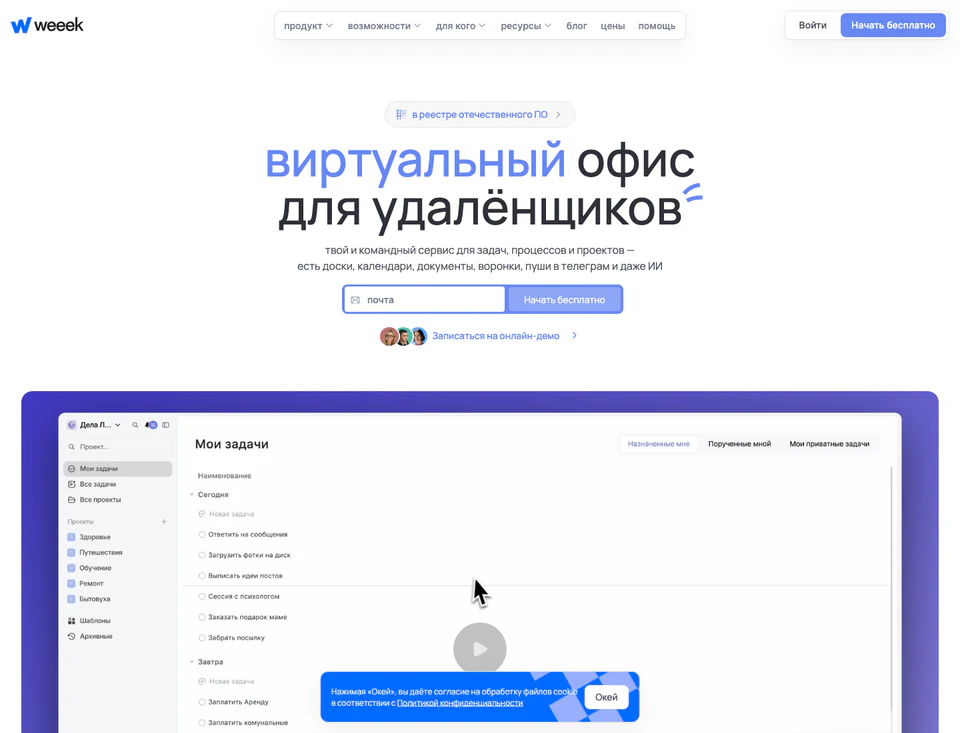
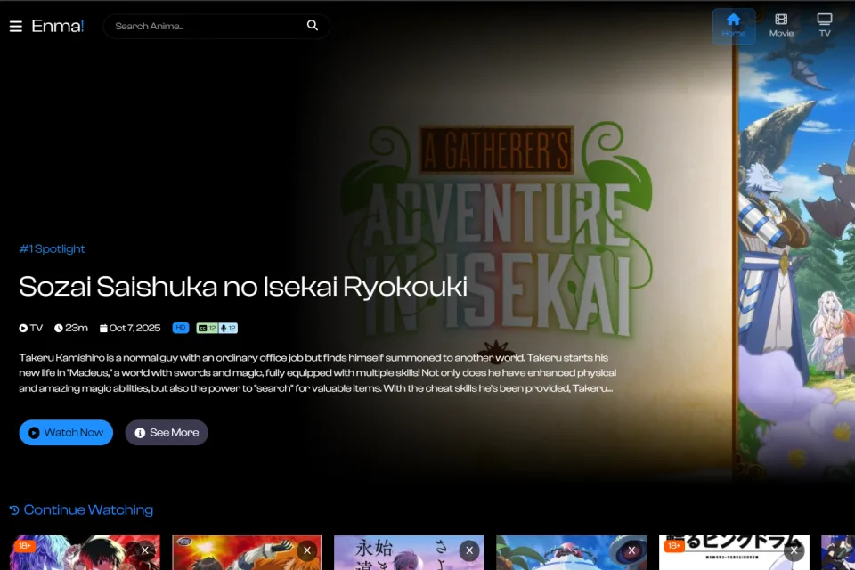
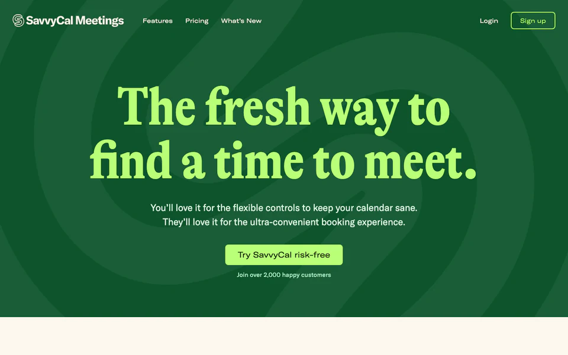
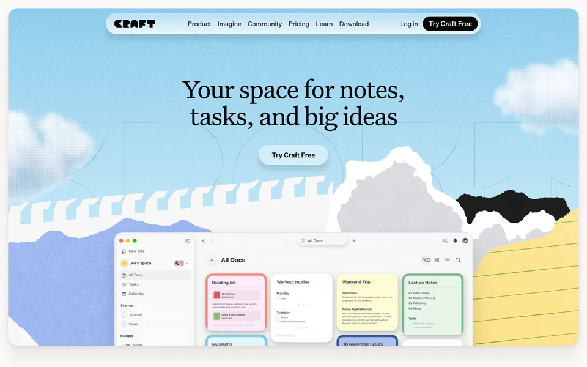

Weeek / Рабочее пространство
Доски задач, документы и переключение между проектами в плотном рабочем интерфейсе.
- JavaScript
- SCSS
Разрабатываю интерфейсы для веб-сервисов.
Каталоги с поиском и фильтрами, пользовательские подборки и сценарии с состоянием в реальном времени.

Доски задач, документы и переключение между проектами в плотном рабочем интерфейсе.

Поиск аниме, подборки и страницы просмотра серий в одном интерфейсе.

Календарь свободных слотов и запись на встречу без переписки о времени.

Документы, вложенные страницы и задачи в личном и командном пространстве.
Я работал над сложными каталогами и пользовательскими сценариями. В таких продуктах мне важно сохранять ясность интерфейса.